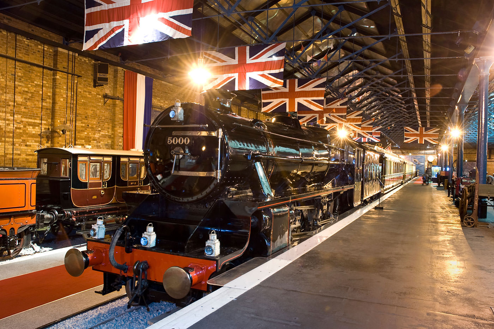

국립 철도 박물관
100대가 넘는 차량, 방대한 도서관과 놀이 공간을 갖춘 이 박물관에서는 200년에 달하는 영국의 철도 역사에 대해 알아볼 수 있습니다.
국립 철도 박물관에서는 지난 200여 년간 이어져 온 영국의 흥미로운 철도 역사를 살펴볼 수 있습니다.
박물관의 전시물은 철도 교통에 따라 사회가 어떻게 변화하고 발전했는지를 직접적으로 보여줍니다.
이 박물관에는 마차철도, 증기 기관차, 왕립 철도 객차에 이르는 약 100대의 철도 차량이 전시되어 있습니다.
국립 철도 박물관은 요크 도심에 있는 주 철도역 근처에 자리잡고 있습니다.
철도역 근처에는 세인트 메리 수도원, 요크 미술관, 클리포드 타워를 비롯한 많은 명소가 있습니다.